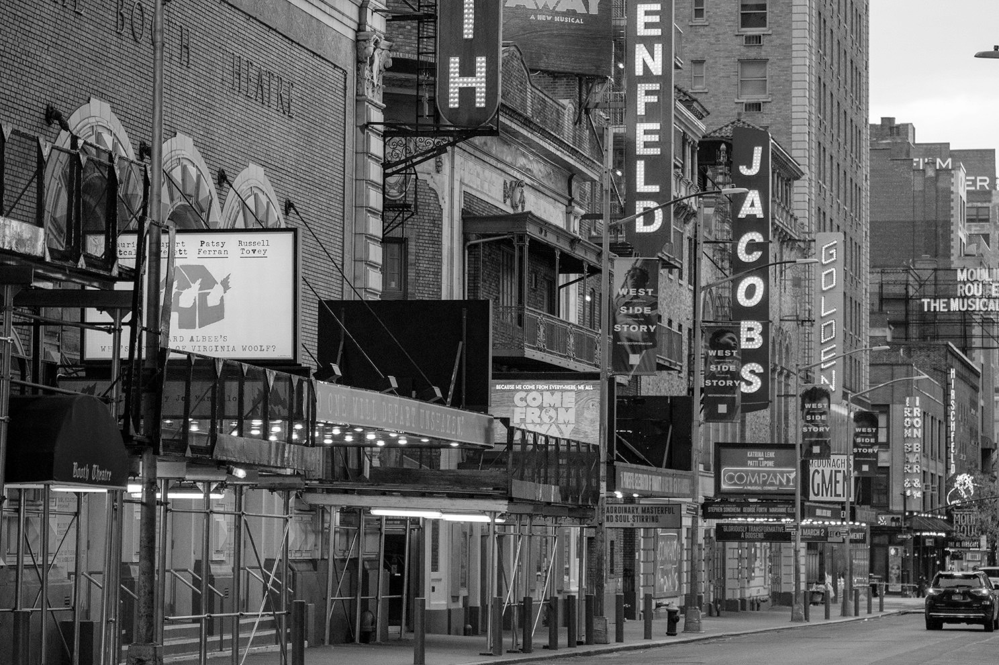

Broadway theatre, or Broadway, are the theatrical performances presented in the 41 professional theatres,
each with 500 or more seats, located in the Theater District and the Lincoln Center along Broadway, in Midtown Manhattan,
New York City.Broadway and London's West End together represent the highest commercial level of live theater
in the English-speaking world.